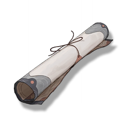

"Grand Library" route map
Missions

The "top left corner" of the route map has been marked with a red circle, which may be the location of the mechanism.
A small scroll taken from the Sundial mechanism box, which is the route map of the "Grand Library", the central database in the City Hall. The "top left corner" of the route map has been marked with a red circle, which may be the location of the mechanism. Round and round, layer upon layer, the promised land, the promised arrival.